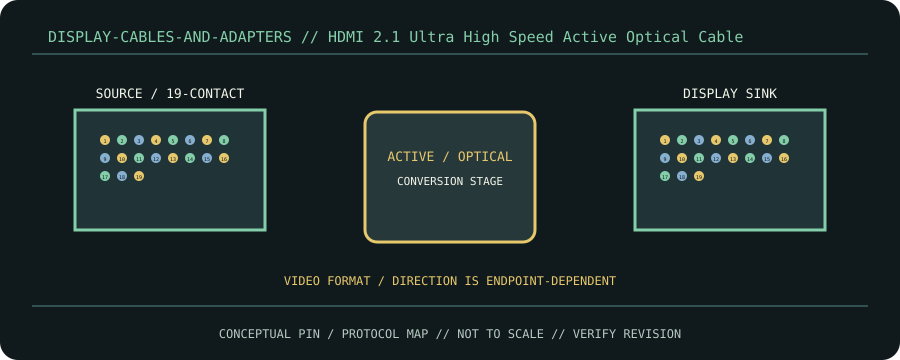

[ CABLE / ADAPTER RECORD // HDMI ULTRA HIGH SPEED ACTIVE OPTICAL ]
HDMI 2.1 Ultra High Speed Active Optical Cable
Directional HDMI endpoints with optical conversion; protocol terminates as HDMI, unlike passive copper wiring.

CLASSIFICATION: Display cables and adapters. Identify protocol, direction, pinout and exact cable revision before connection.
Interface and capability
| Standard / protocol | HDMI Ultra High Speed active optical. Connector appearance alone does not establish compatibility. |
|---|---|
| Endpoint / pinout | Directional HDMI endpoints with optical conversion; protocol terminates as HDMI, unlike passive copper wiring. |
| Capability / limits | Ultra High Speed certification tests up to 48 Gbit/s; run length belongs to exact product and may require source power. |
| Certification / length | Standards define interface requirements, not every assembly’s performance. Certification, mode, current/power rating, direction and maximum length belong to the exact product/revision and complete channel; verify its manufacturer specification. Do not infer certification from connector shape or marketing terminology. |
Compatibility & handling
- Install source/display direction correctly; observe bend radius and pull limits. Confirm certification and exact length; no universal AOC maximum.
- Inspect connector keying, latch, contact condition, shielding, jacket and model/revision marking. Stop if contacts are bent, loose, scorched, corroded or mismatched.
- Route without tension or sharp bends; follow product bend-radius, strain-relief, current and environmental limits. Test at the intended protocol and mode—physical fit is not a compatibility test.
Sources & further reading
- HDMI Licensing Administrator Cable ProgramPrimary standards-body or manufacturer reference for HDMI Ultra High Speed active optical; confirm exact cable assembly, certification and revision.